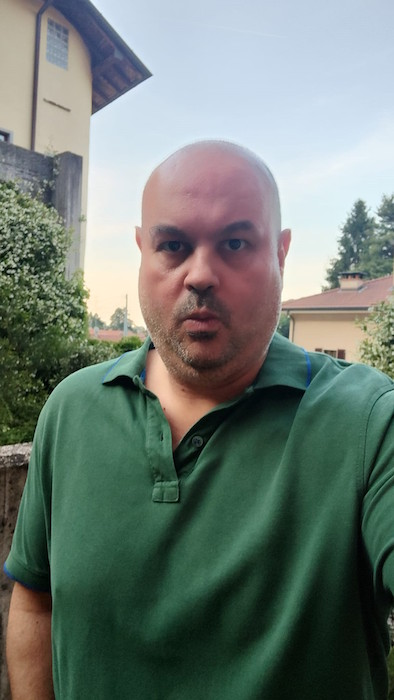
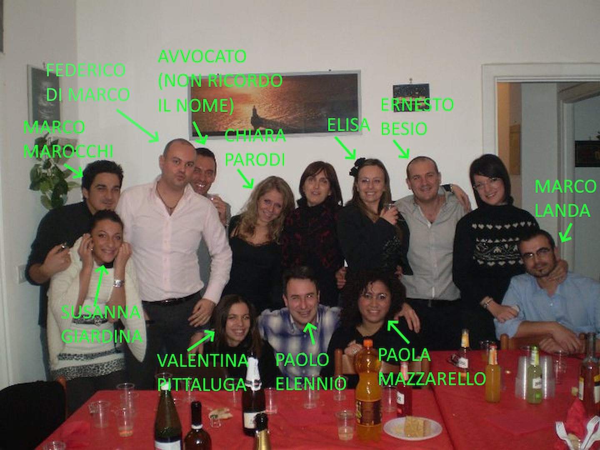
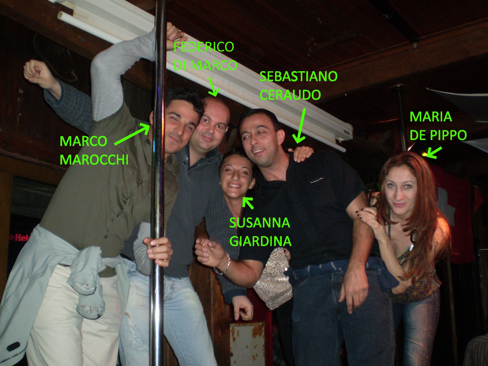
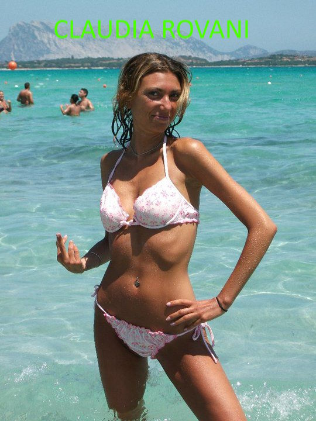
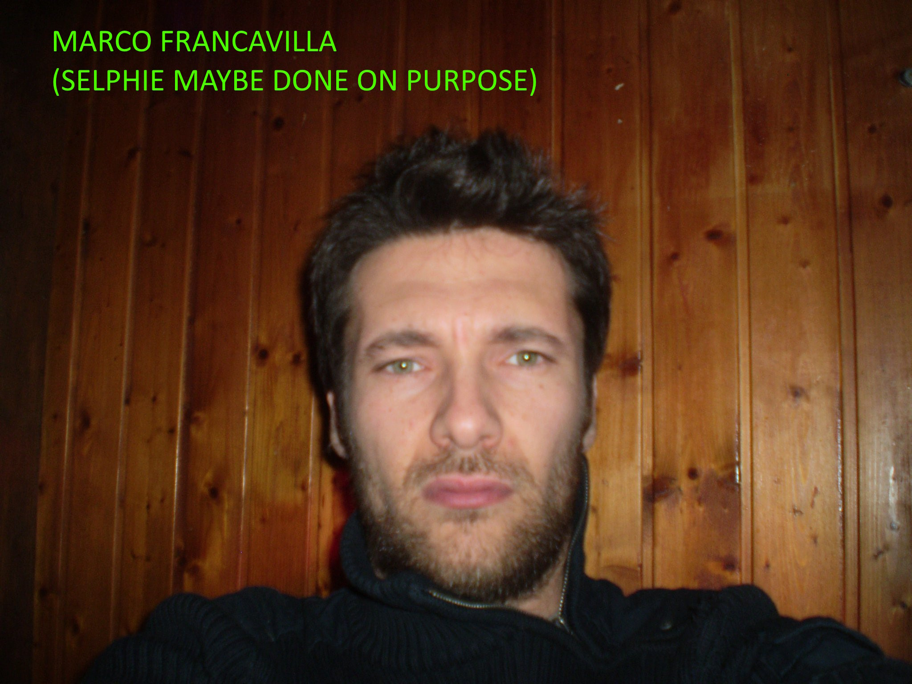

I’m a senior software engineer, born in Genova, Italy, with a master degree in computer science, in the second half of his forties.
Started using a computer at six years, gone through logo, basic, assembly, C/C++, java and finally to .NET and .NET core. Proficient also in databases, especially Sql Server and reporting. Let’s say I have also some experience on security but mainly in the past, now things have become much more difficult and I do not have too much time to keep me updated, but sometimes I am still kicking in.
Fan of videogames, technologies, motorbikes, travelling and comedy (click my name above for my main page).
Famous quotes:
Introduction
During life you may be applying for vacancies at international government organizations (European community, United Nations, NATO, etc.) and I would like to point out some hints for not having potential unpredictable issues jeopardizing your career and even your life as it happened to my person.
Perhaps if you are thinking of working in such vacancies you are for sure a well above average person or even a top performer among your peers who has been successful in studies (or languages) and who wants to put your skills at the service of a greater cause obtaining at the same a high rewarding job. You are also probably a person who likes competition because you want to prove yourself how you rank among your international peers. Unluckily people who are above average in studies (and I put myself among these) are somewhat naive: they spend their time studying or working hard, often helping others without requiring anything back, but at the same without thinking that envy is omnipresent and, remember, envy creates silent enemies, sometimes even deadly. Yes, deadly, e.g. persons who suffer from the success of others and want at all cost to curb or even destroy it because according to their brain they are better than you (maybe just for the physical appearance) and they have to prove it to others.
Many years ago I started applying for vacancies at European Commission and I was even summoned for interviews a few times (I am including a screenshot from the EPSO website - the European personnel selection office) and I inadvertently talked about these interviews to my "friends" and my former university alumni without boasting and above all without thinking of someone could be plotting against me and my career. You never know what envy can push to do to those who feel it, it is even one of the main reasons why murders are committed (and if I am allowed I would say that this story is almost due to it).
In particular after some time I applied to one vacancy as a software engineer which required a security clearance, an unknown word to me at that time and even still "blurry" today which fundamentally "warranted" the fact that the candidate was "somewhat trustable" in giving him the access to classified information. It is obviously an undocumented procedure to most of people; as far as I was able to gather reading some newspaper articles a security clearance involves a background check (criminal records at least but probably also other checks) from the national secret service about you, your parents, your close relatives and friends. Should something be found not to be "right", the clearance procedure would have ended just by "labelling" the person "not suitable" without any "consequence" on him or his family (as a sad note of my family in '80s my father had a car accident in which a person died and he was sentenced to misdemeanour involuntary vehicular manslaughter).
Below I'll get straight to the heart of the matter giving my advices when applying for working at international organizations, if you wish to get an insight about the strange and troublesome facts which persuaded me to create this webpage and changed permanently my view towards friendship, you can also read the final section.
Personal advices while applying for working at international organizations
Leaving my personal misadventure apart the advices I would like to give to those applying for international organizations are:
- Do not talk with anyone else except your family about applying for such positions: you never know your friends or with whom they can be related. As a matter-of-fact, the detectives told me once that often the fathers of future brides ask for background checks on the to-be husbands and sometimes they even find something unwelcome which makes the marriage to be cancelled.
- Do not trust any new acquaintances or friends that you knew or got introduced after starting to apply for such positions
- Remember that performing better than others creates for sure envy in some of your acquaintances and envy creates silent enemies, sometimes even deadly.
Strange facts which affected my life and changed permanently my view towards friendship
I was on a holiday in US when I received a summon for the interview and just a week before my interview I was introduced by Fabrizio Rizza, a Calabrian former university alumni, friend at that time, to two of his friends, Marco Marocchi and Sebastiano Ceraudo, which revealed to be easy-going and sociable at the beginning and even introduced me some women external to my circle of friends, but revealed then very "felonious" after some time. As a side note this Calabrian was introduced to me by another former university alumni Paolo Dellepiane, who in turn was introduced to me by a former my same high-school student Luigi Chirico (Chirico surname is originally from Campania), who started studying computer science at the university like us, but then left to become a policeman. Paolo Dellepiane, while attending the classical liceum at high-school, studied also musical instruments at conservatory.
At the same time, Stefania Serra, a female friend of a former close friend of family Roberto Bazzoni introduced me two new women, Chiara Parodi and Paola Mazzarello. Chiara Parodi was working as a business analyst in Verona, a city little less than 300 kms away from Genova, incredibly with a former customer relationship manager I worked with at Atos Origin called Massimo Gaioli, and she was coming back to Genova on weekends; her best friend was Paola Mazzarello, who at that time relocated back to Genova after having worked for some years in Alessandria. I knew very little about them (I do remember that Paola Mazzarello had a brother which I only saw once), unluckily they revealed troublesome (I even wondered if some of the men whom she or her friends were dating could be sneakily non-heterosexuals) after some time and Chiara Parodi later even married Mr. Ceraudo. To make a long story short all the situation degenerated after a holiday to Canary Island - Gran Canaria organized by Mr. Marocchi with Mr. Ceraudo, his girlfriend Susanna Giardina, her cousin Maria De Pippo from Turin and her boyfriend Marco Francavilla. Nothing particular happened as far as I can remember on that holiday except that one night I got drunk after being offered some drinks and Maria De Pippo kept asking sneakily repeatedly if I could be a non-heterosexual, making me wonder if her husband maybe practised triolism or was a non-heterosexual looking for fun. Anyway, even after cutting all them off after that holiday (I still have the doubt whether they went again to Canary Island by themselves later), I experienced troubles not only with the Calabrian Rizza and his other friends, but also with my historical circle of friends without being given any reason. At that time I was employed at Altran Italia, a multinational French consulting company (the president at that time was the French Marcel Patrignani), I was hired by the director Giorgo Dabbene from Turin, initially in Milan HQ under the "pleasure" of the perfectionist project manager Alessandro Zamboni and the functional analyst Mariafrancesca Iolo (they were not a direct reports of Giorgio Dabbene but there was another manager between them called Michele Colantuono whom I only saw later a few times to settle the situation, the software architect of the project was at that time Marco Barzaghi, an external consultant from Managed Designs, trusted long-term collaborator of Alessandro Zamboni and also a Microsoft MVP against whom however I have nothing to say, at least for what I know and the times I worked with him), then I requested to be moved back to Genova, under the "pleasure" of the manager Emanuele Castagno working as a consultant at Ericsson after some time in the local branch; one brother of Mr. Rizza had been working there for years and I experienced some serious troubles also there, which forced me to resign. As a sad fact the secretary of Genova branch of Altran Valeria Bruzzone, who studied as psychologist, with whom I and other co-workers used to have lunch died mysteriously at her home in her early thirties, only two weeks after I went to a solo aperitif with her (at that time she had recently broken up with her historical boyfriend, moreover at the aperitif in an another table there was also Lorena Piloro a former girlfriend of my family friend Roberto Bazzoni, for all the weird or odd things that happened to me I even suspected that I had been investigated as a suspect for her strange death). To try to understand what happened I had to hire some private detectives (ex-policeman) and I found some "worrying" facts, the most important of which are:
- Mr. Ceraudo had a criminal record and he has origins from a Calabrian town called Petilia Policastro where this surname is notorious for being a 'Ndrangheta clan: the referenced article is published on "Il corriere della Sera", the most read newspaper in Italy and talks about a series of surnames like the Coscos, the Carvellis, the Comberiatis, the Toscanos and the Ceraudos who were all originating from Petilia Policastro and involved in criminal activities of 'Ndrangheta. Moreover Mr. Ceraudo has a cousin in Turin called Carvelli. Out of curiosity let's do some math:
- Petilia Policastro has a population of around 8500 persons, so around 3700 families live there (8500 / 2.3 (the average number of persons in Italian families in South Italy))
- The total number of Italian families is around 27 million, Rossi (which means red) is most widespread surname (think at Paolo Rossi the famous football player or Valentino Rossi the famous motorbike pilot) has a distribution of around 350000 families, which gives a percentage of approximately 1.3%. Let's exaggerate and assume that the percentage for both Ceraudo and Carvelli surname in Petilia Policastro is for both at 8% (1 every 12.5 surnames, around 6 times more than Rossi's 1.3 percentage).
- Using 8% as a surname percentage for Ceraudo in Petilia Policastro there would be around 3700 * 0.08 = 296 Ceraudos
- Again using 8% as a surname percentage for Carvelli in Petilia Policastro there would be around 296 * 0.08 ~= 24 Carvellis who are relative to Ceraudos
- I do not how many of the 24 Ceraudo and Carvellis related families are associated with the Calabrian clans (usually mobsters marry each other relatives to ensure a stronger connection, although very often, even in common families, "quarrels" between relatives do happen and due to these facts you can imagine how my sister-in-law and her family took a fierce stand against me and my family to defend her close friend Mr. Bazzoni), but in the worst the case (e.g. just one family exist) the probability is 1/24 ~= 4% and in reality it could be even higher.
Honestly, I would like to have known all these facts before going to such holiday, because I was applying for positions at international organizations and I would have avoided at all cost of staying in a hotel room with anyone with criminal records (I do not know if he is non-heterosexual, as far as I can remember and I know I was not harassed at all, but obviously to defend his friends Rizza and Marocchi he could have done or declared anything against me or my family). Probably the former Calabrian university alumni Rizza who introduced him to me knew something about these facts and did it on purpose. Rizza has two brothers, Gaetano working in Ericsson at my home city Genova and Luciano working since many years in Zurich, Switzerland and both of them know Mr. Ceraudo. Mr. Fabrizio Rizza worked in Genova and Milan for Neonetwork srl, a firm specialising in television production and services (like live polls, etc.), which became later part of the bigger Zodiak Media group. As a curious fact in Neonetwork srl it worked also Mr. Luigi Bozzo, another university alumni of computer science with whom I did one university project while studying (Arkanoid 3D); morever Mr. Paolo Dellepiane some months before my graduation started unexpectedly hanging out with him and many years later I was told that Mr. Paolo Dellepiane stole Bozzo's girlfriend from him and they even eventually got married, quite an incredible fact IMHO, at least for what I learnt in the years I hanged out with Paolo Dellepiane (I mean he was mostly polite and well-educated, I would not have expect at all a dirty trick like this - who knows maybe in his private life he is a kind of Dr Jekyll and Mr Hyde, I hope not like the protagonist of the old movie The talent of Mr.Ripley whom he always mimicked enthusiastically and looked a bit like :-) -, but my knowledge about their matters is almost none, moreover I never dared to ask).
- Mr. Marocchi had such a vivid interest in understanding if I was a non-heterosexual with his future brother-in-law Francavilla up to the point of staging it (for all the countless times he insisted on this matter I even felt that he wanted to rape me or to be raped by someone else or even emasculating me): moreover, his wife to-be Maria De Pippo managed a historical dance school called BIT (Balletto Impronta Torino) while Marco Francavilla worked for the Mediabanca investement bank. If you Google for their surnames it comes out some unwelcomed articles:
- Mr. Marocchi tried extensively to make me date of his female friend called Claudia Rovani, a surname originating from Argentina and Brasil. Mr. Rizza once warned me against her (he literally said "there's something about her that I just don't like I really don't like"), I can remember she was very very thin and she studied as a psychologist in Florence, Tuscany. At the time I was introduced to her, she dated officially Fabio Risso, who managed a bar in my home city called "A Due Passi Dal Mare" with an Albanese business partner (I do not remember his name, he was nicknamed Nemo like the famous Pixar fish), and she was a close friend of Stefano Toscanini. I can't say anything against her, at least for what I know and the times I met her, I mean to defend her close friend Marocchi she could even have made up or staged any slander about me or my family; morever she had in the past an affair with Mr. Marocchi. As a curious fact Mr. Marocchi suggested a few times sneakily to go on holiday in Argentina during our Italian summer vacation, to which I replied funnily without thinking badly at that time that it was winter there, so it was cold and I didn't feel like go skiing. As a matter of fact, my family has some relatives in Argentina, but I have only seen a few of them once in my whole life, though we have been recently keeping the contact on the phone every now and then.
Mr. Marocchi's best friend is called Federico Escobar, quite a "worrying" surname, he had Chilean origins and relatives from Campania, he lived in Rapallo, the same city where my brother and his wife were living at the time of the facts (I was never told by anyone if they any of them knew him, but probably not), even though I can't say anything against him, at least for what I know and the few times I met him (same note as Rovani's apply). He had an affair with Claudia Bonifazio, a woman related to Sebastiano Ceraudo's first wife, whom I also dated one evening (if I remember correctly she was from Finale Ligure and she was studying at the university in Genova). He had just left London where he was working as a cook when he was introduced to me and used to dance salsa and bachata like me, though I met him only twice in the dancefloors of my city. Once I had been to a bar managed by his "parents" which is in Genova in the neighbourhood of Nervi (along "Via Oberdan" street if I remember correctly).
The surname Escobar is notoriously connected to the drug smuggling, I myself almost never smoked (I would say around 10 cigarettes in my whole life) and I have ever made a joint or sniffed any drugs. Among my circle of friends the ones mostly connected to drugs are Luigi Chirico and another friend of mine Giulio Manassero (a former "carabiniere", an Italian military police which deals with civil crimes, now he works as a perfumer in a small family shop) who used to go clubbing together (I introduced Giulio to Luigi precisely for this reason) in discos where having fun with drugs was the order of the day like the ones in Ibiza, moreover they aren't the only law enforcement personnel using drugs, around 2010 in Genova there has been a great scandal about policemen consuming/smuggling drugs and every now and then a news like this comes out on the newspaper. As a curious fact Giulio told me once that in many LBGT clubs there was a great consumption of drugs and no-one ever complained or tried to curb this and he, as a former "caribiniere", always wondered why. For sure my parents never consumed any drugs, I do not know about my brother Alessandro, but I strongly hope he did not.
Luigi Chirico once after these facts warned me that Giulio Manassero was making fun of me as a "bender", but I never believed him for nothing due to the fact that I knew Giulio earlier than him (he was an elementary school co-student and friend of mine) and when we were teenagers, Giulio always used to go clubbing to a local club called Cezanne where he was surrounded by women (at that time he did not care at all about drugs) and he always invited me to join the club and a few times I went there he granted me free entrance and even introduced me some girls. I do remember however one strange fact which seems to support Luigi Chirico's concern. While I was studying at university I, Paolo Dellepiane and Luigi Chirico had an odd job during the weekend as a pizza delivery driver for a local pizza business on my homecity Genova called Pizzapoint in order to earn some pocket money (it was the same Paolo Dellepiane who introduced me to this job); after we had finished working we usually sat on the wall in front of the pizzeria and we discussed about where to go that night; I do remember that Giulio Manassero, who came to pay a visit to us very few times often carrying some weed, once brought a drug called popper offering it to everyone who was present there and later I discovered that this drug was also widespread among non-heterosexuals since it relaxed muscles like anus and it was usually used to facilitate anal intercourse. On that occasion I did not pay any attention to this event (I mean Giulio almost always carried with himself some drugs) and but later I wondered if it had been done on purpose. In any case I fear that the best friend of Luigi Chirico, Paolo Dellepiane, the one who introduced me Fabrizio Rizza during my thesis at university might be involved in the story, though Giulio had some issues with the first South American wife and later he married again with a Romanian woman, fact after which he curbed greatly his "partying in such clubs", even though I do not know almost anything about her or her family.
I used to attend salsa and bachata classes at Victor Latino club in Genova (now it is called Caribe), my main teachers were Amelia De Martis and Mauricio Hernandez (they were former Italian national champions in a category), I still have the doubt whether anyone of my club knew Mrs. Maria De Pippo or any of her acquaintances. Amelia De Martis had an affair with a Calabrian Alessandro Sgambelluri, a close friend of my former best friend Marco Landa and also a friend of mine for a period of my life. Attending salsa and bachata classed there were also policemen (I can remember one called Silvio) and another person called Silvano (I do not remember his surname now) who was a close friend of Alessandro Sgambelluri (beside a common companionship and attending salsa clubs they worked both as train conductors); with their company I had hanged out for a few years (I remember three women Silvia Pasetti, another Silvia and Stefania from Recco a city nearby Genova whose surname I do not remember), but then I discovered Silvano had it in for me without any apparent reason and after that I didn't see him or his company anymore. Silvano was funny and well-endowed (at least for what he and some women praised) and he leveraged this making often fun of others, sometimes even ruthlessly (I discovered later he also backstabbed me); moreover, his ego was boosted by the fact that many women pursued him. As curious fact, one year I went on a holiday with him to Lloret De Mar, Spain and the fate had it that also Fabio Veno from Naples was there on holiday in the same period (we hanged out once one night to say hello to each other because it was years we had not seen each other).
- The holiday to Playa Des Ingles, Gran Canaria was suggested and organized two months before by Mr. Marocchi just after having passed a weekend in Turin in November, where I, Mr. Ceraudo and Federico Escobar went to pay a visit to Mr. Marocchi who, though from Genova, was working there and had an employer-paid house where I slept with him and Mr. Escobar (Mr. Ceraudo on that night went sleeping to the house of his cousin Mrs. Rosina Carvelli). Of that weekend, the only one I have been in Turin in my life, I can't say anything except that we went to a music club in the Murazzi area along the Po river where nothing unusual happened and later we went to have breakfast in a very big bar (I do not remember their names). The only fact worth of attention was that while talking Mr. Escobar suggested abruptly to forget about Mrs. Claudia Rovani, which I did also for other reasons in the following weeks. I can't say if Mrs. Maria De Pippo or Mr. Marco Francavilla or any of their acquaintances were with us at the music club or at the bar we had breakfast because I did not know them and moreover on that weekend they were unavailable (I had personally asked Mr. Marocchi to introduce them to me on that occasion because he was already thinking to the holiday to Gran Canaria and I wanted to know with whom I could be going on holiday, unluckily Mr. Marocchi only introduced them to me the same day we were leaving from the airport and I met them directly at the gate because we flew from Pisa (in Tuscany) airport and they arrived very late from Turin stating they had been stuck in the traffic, also the choice of Mr. Marocchi of departing from Pisa airport is somewhat debatable, for sure Milan Malpensa would have been a better choice for them and almost the same for us). After that holiday I decided to break off the "friendship" with both Mr. Sebastiano Ceraudo and Mr. Marco Marocchi and the latter reacted in a resentful way coming down my house leveraging that I should not break up a "friendship" in this abrupt way and trying to brainwash me for an hour as the one who was the non-heterosexual and not the cousin Marco Francavilla of his girlfriend Susanna Giardina (I included also a cd with the recording of this "speech" attached to the lawsuit). This has been the first time in my life that I let someone whom I naively regarded as a friend took the liberty of saying such an insult to my person (later even the ruling Court of Cassation, Section V, judgment of 17 May 2021, no. 19359 by the Italian Supreme Court confirmed this crime) and after such event I never gave anymore a person behaving in this felonoius way the right to justify himself breaking off "the friendship" immediately (unluckily at a later time it happened again with my former friend of family Mr. Roberto Bazzoni as described in my other page on LBGT community, resulting hence in the breakdown of all relationships with him, even though many years later my brother let him come to the funeral of our mother against my will).
- On the summer just before the holiday to Gran Canaria, I had been to San Teodoro, Sardinia (by the way in Sardinia IMHO you can find the best sea and beaches of Italy) for two weeks in a seaside house provided at good price by Mr. Marocchi construction company Coopsette of the CCPL group, where Mr. Marocchi also invited some of his female friends who joined for a shorter period: the forementioned Claudia Rovani who came just for three days since she suddenly had to go back to Genova, the aforesaid Susanna Giardina who later became his girlfriend, Annacarla Scialpi and a friend of her called Monica who had come back to live to Italy from Germany. Moreover we also met four women from Brianza, Lombardia called Giulia Folcio, Cristina Porro, Laura Peccerillo and another woman whose name I can't remember (surprisingly we found them just behind our towel on the beach when we came back after swimming). Giulia Folcio and Cristina Porro also came to Genova around one month after such holiday to visit us (they had an accommodation near Recco), one night we went together eating to a restaurant in Santa Margherita Ligure and then another night to a beach club in Genova called Sys Sporting where the DJ Danilo Quaranta used to play (unusually he was a former alumni of my university who used to play pool in the same club I used to go with Paolo Dellepiane and Luigi Chirico and who became a DJ near the end of the studies becoming eventually very popular). During that weekend nothing particular happened except that Luciano Elennio, the brother of Paolo Elennio, a former friend of mine (nicknamed "Pablo" by Marco Marocchi) and another alumni of computer science university, started shooting several pictures at our group in an annoying way, probably also to Cristina Porro and Giulia Folcio, even though they never complained with me and also none of the people present ever said anything to me about such misbehaviour. Moreover Paolo Elennio is also a friend of the dj Danilo Quaranta (they grew in Genova in the same neighbourhood Sestri Ponente). As a matter-of-fact I discovered many years later that the town near Varese called Induno Olona (sorry it is only in Italian you have to translate), where I relocated later for working in Switzerland as a cross border worker, has its main street called "Via Porro", by googling Porro on Wikipedia I understood that "Porro" is the surname of a historical powerful noble family from Lombardia, entitled lord ("signori" in Italian) of Induno Olona and astonishingly even of my home city Genova. I do not know if Cristina Porro is related to this noble family or not and I do not have nothing to say against her or her friends that I met in San Teodoro (again at least for what I know and the times I met them), but I can't say the same against the town since some period after I relocated here I was anonymously slandered.
- My former close friend of family Roberto Bazzoni just a month after my first interview in international organizations tried to kiss me out of blue in the middle of party and made us take an artistic snapshot of the scene by a female photographer friend of him Stefania Serra, probably accomplice of him minimising it was a joke (by the way Mr. Bazzoni works as an expropriator consultant for the courthouse (works for the company IVG Genova as well as other alumni of computer science whom I knew almost by sight started working for the courthouse as consultants too, I remember Mirko Davolio, a biker and close friend of Fabrizio Rizza, Marco Scarito and Mattia Epifani who, as far as I was told, they did not get along well with Fabrizio Rizza) and moreover he even dated female judges (if I remember correctly she was working at the courthouse of Chiavari, a nearby city), ironically I can't think of a better "alibi" for a suspected non-heterosexual; moreover the same judge who had dated Mr. Bazzoni dated also later Mirko Boero, a friend and a former classmate of Paolo Landa, the twin brother of my former best friend Marco Landa, as a curious fact both Marco Landa and Mirko Boero have dated South African women, not so common in Genova. Last, but not the least, Mr. Roberto Bazzoni dated for a period of time a woman called Antonella from Recco, but I barely know anything of her.
- Mr. Marocchi had friends working both in the police (I do remember one named Alex working also as a public relation in a club called La Kascia in Arenzano, where also the DJ Danilo Quaranta used to play often and my former university classmate Paolo Elennio used to go) and in "Carabinieri" (I do remember a woman called Luana whose father worked as a "carabiniere")
- Two years before these facts I went on holiday with Roberto Bazzoni to El Arenal, Palma de Mallorca, Balearic Islands where we met four Venetian women staying at our same hotel (and one night at a pub I noticed also a blonde woman who reminded me a lot of a friend of Alessandro Sgambelluri who I had seen a few times) and then to Ibiza, Spain where Marco Pallavicino joined us and later also Giulio Manassero who stayed instead by himself in another hotel. There nothing special happened except that we met two other Venetian women with one of whom Marco Pallavicino had quite a passionate summer fling even in the hotel pool just in front of other guests (including children :-) and that Roberto Bazzoni one night insisted on going clubbing to "La Troya" event at Space club which I discovered unfortunately to be the greatest gay event in Ibiza (I blame myself for being an idiot, but please keep in mind that it was 2008, smartphones were only at the beginning and there was even no free roaming in Europe, luckily thanks to European wide roaming and the smartphones which are now widespread these nasty tricks are much more difficult to be done). Usually when Giulio is stoned (I believe like everyone else) says a load of amusing bul***t and in that holiday I do remember that Roberto Bazzoni even made a recording of one of his speeches with his Nokia phone (a glorious mobile brand from the past) which we later listened again having fun altogether.
- Mr. Bazzoni and Mr. Rizza had a common friend originating from Campania, called Antimo Verde. Unluckily Verde is also a notorious surname from a Camorra clan historically active in Sant'Antimo, a city near Naples, but I barely know anything of him.
- Mr. Bazzoni has always had non-heterosexual friends (I do remember one named Massimo which I have only seen once and he unexpectedly lent his car for the marriage of my brother and sister-in-law, an event which I have always wondered why because my family could have afforded it and even more astonishingly "they" decided to have their wedding dinner in a well-known club called Sol Levante in Lavagna, a nearby city (as a matter-of-fact besides Mr. Marocchi also my former best friend Marco Landa had connections with clubs, he had a relative who worked in the clubs of my homecity as a bouncer). Moreover, Mr. Bazzoni has always been a supporter of non-heterosexuals, though he cunningly used always other persons, in Italy we have a way of saying about this "Sono tutti finocchi con il c**o degli altri" which literally could be translated "They're all faggots using other people's as**s".
- The wife of my brother (so my sister-in-law) Roberta Grillo is a close friend of Mr. Bazzoni and he was the one who actually introduced her to him. Since as far as I can understand from the events that Mr. Bazzoni is most likely a non-heterosexual, being a close friend also of my brother, I even considered that all this story could be a clever scam if my brother is or has been a non-heterosexual, but I was never said anything either from him or from my family or from my other close relatives or friends. What I fear the most is that due to the high presence of Calabrian persons among my circle of friends, criminals might have taken it out on my family by having them raped (to stage someone of them was non-heterosexual, in this was they would have turned me into a scammer) or forced to commit some serious crime or to declare something against me.
- Many of my historical circles of friends had relatives from Calabria and Campania and in particular my former best friend Marco Landa had relatives both from Calabria (their surname is Raschella, again Raschella is again a notorious Calabrian surname in my city connected with bribes and waste trafficking for a local recycling business with bank accounts in Switzerland) and Foggia in Apulia and had a sister who used to play football; he has worked for many years abroad on cruise ships for Carnival Cruise Line as a machine officer, then at Wärtsilä in Genoa for around a year and afterwards, around 2 years earlier than these events, he started working at Marghera (near Venice) in the shipyard where cruise ships are built. For sure some of my former friends were rumoured to be non-heterosexual (my former best friend's brother Paolo Landa was one of these, by the way like Luigi Chirico he started studying computer science at my university, but he then left after a year for studying economy), but obviously I never asked or cared (I am heterosexual, obviously I began to care when I was slandered as one of them and suffered an undeserved damage as a consequence) and I was never informed too.
Coming back from a short holiday to Krakow, Poland I called a former female co-worker Silvia Battista living in Milan - she was a lawyer working like me at Italian Revenue Agency and I had not seen her for some years - to say hello and in that moment she was near the Milan Bergamo airport where I landed so I gave her a ride to Milan by car, after which I went back to my home city Genova. During the trip back to Genova I was called by Adelmo Bucci, a childhood co-student and also a "common friend" - we used to have PlayStation tournaments at late night - who became a general practitioner, to join a late afternoon appetizer with his friends: there I remember to have talked to one of his male friends called Andrea about how to cure a bad cough I had (if I remember correctly his name) and the I was invited to eat a pizza at a pizzeria I was never been before named La Cigale. At the dinner Adelmo Bucci also invited two older male persons (I was around 35 then and they were around 50) who I have not ever seen; the dinner went almost normally, though these two older men however asked me some personal questions, but after dinner a strange funny fact happened: we were talking just outside the pizzeria and a drunk male passerby came and started talking non-sense to these two older men breathing at them and after a couple of minutes they decided to leave like me and Adelmo Bucci.
The fact was very strange however because I remember that Silvia Battista dated a person living in Turin some years earlier; moreover pizzeria La Cigale was also one the pizzerias where my former friend of family Roberto Bazzoni used to get the home-delivery pizzas. But what is worse is that later I discovered that Adelmo Bucci, had it in for me with some of his friends (probably non-heterosexuals) and he has even worked with some unprincipled felonoius doctors, whom in the past have been rumoured to have exercised conversion therapies into non-heterosexuals and I have a very strong suspicion about their involvement (according to Freud's theories, people become non-heterosexuals as a consequence of a distressing heterosexual experience and unprincipled persons try to exploit this "theory" by using or inducing women to mistreat an individual to persuade him to experience a same-sex relationship, in essence, it is a mental manipulation technique based on the expectation that those who are not strong enough will get "converted").
Moreover there were three common female doctor friends between Stefania Serra and Adelmo Bucci whom I met at a barbecue party at Marco Pallavicino house in Gavi, Piedmont for his birthday three weeks before the evening at pizzeria at La Cigale and who dated also persons I did not know (I remember talking to one of them, Stefania Garaventa and another one expert in astrology and horoscopes); some of their boyfriends were supposed to be policemen at the party, friends of Enrico Pallavicino, the brother of Marco Pallavicino, another policeman working in Piedmont. There was also a common friend between Marocchi and Ceraudo and the historical circle of my friends, a woman called Valentina Firpo, friend also of one my best childhood friends Alessandro Rabbia who in turn is also the cousin of Marco Pallavicino. Sometime after these events, a woman posted a picture on her Facebook wall a picture of a group of youngsters where two of them seemed to be Marco Pallavicino and Marco Francavilla, yet no one I knew confirmed or denied this; any as a matter-of-fact Marco Pallavicino studied at university in Turin for some years. As a matter-of-fact Alessandro Rabbia was a close friend of Adelmo Bucci (they used to play football together for several years) and his first wife Arianna Conti became a close friend of Adelmo Bucci because, though not a pediatrician, she used to ask him for advice on any illness of their child Lorenzo; moreover a university alumni and DJ Danilo Quaranta works in the same shipping company Ignazio Messina with Mr. Rabbia. Finally but importantly I also attended a Jiu Jitsu class with a close friend of Luigi Chirico and Paolo Dellepiane called Alessandro Bordo where I met a doctor, friend of Adelmo Bucci whose surname is Gandus (I do not remember his name); moreover a brother of Gandus named Giorgio was working with Fabrizio Rizza and many years later became also a co-worker of mine at Grupposigla srl.- Another manager of the Genova branch of Altran Matteo Gandetto was a friend of Marco Pallavicino (they were born and have lived for several years in Gavi, a town 60 kms from Genova well known for its white wine). Matteo Monteverde was another close friend of Marco Pallavicino who studied with him in Turin, he had a seaside house in Celle Ligure where I went a few times for some parties during which there were also some of their friends from Turin which however I can barely remember (I do remind a blonde women called Silvia who one time was rightly angry at me) and I do not know if they know also Marco Francavilla or his fiancée or some of their friends. As a matter-of-fact I was told later that some people from this party knew also a woman called Cristina De Marco, another former alumni at my university and coworker from another department while I was working as a consultant at Atos Origin for Costa Cruises (now part of the Carnival Corporation), whom I have never heard of since I left the company many years before. About her I know little, she has an older sister and she dated another former alumni of computer science and also co-worker of mine at Atos Origin called Luca Pastorino from Masone who in turn is friend Alessio Mura another co-worker I met many years later while working at another company Infinity Technology Solutions bought in 2017 - after some months I have been working there - by Engineering Group, the same company which acquired little before I left the Italian branch of Atos Origin in 2007. Alessio Mura at that time was working for a company called T-Bridge where also the friend of Fabrizio Rizza Alfredo Paolillo was working too, but I do not know anything about their connections. After leaving Atos Origin I joined Altran Italia (called now Capgemini Engineering) exploiting also the networking of two of their consultants at Costa Cruises Paola Augusta and Laetitia Smirni, working on my same project Mistral as software testers.
- Between my former best friend Marco Landa and Sebastiano Ceraudo/Marco Marocchi there was a common acquaintance called Claudio nicknamed "Pacio" (or maybe it is his surname I do not know I saw him very few times), my former best friend and he worked at that time in the same company, at Wärtsilä in Genoa.
- My grandfather Francesco when retired built by himself in many years (he used to be a construction worker at the beginning of his career) for my father and my family a villa in a nearby mountain town called Campo di Giove where I and my family used to spend two weeks during the summer holidays in August till I was 24. The altitude of the town is only around 1000m (Italian's mountains in the central Italy, the so called Appennini, are lower than Northern ones), notwithstanding it snows a lot during winter during winter, you can go skiing there, but 30 kms away there is Roccaraso, a well know skiing resort in the central-south of Italy. There during my summer holidays I met different childhood friends mainly coming from Abruzzi but also from Campania whose the most historical ones are Federico Di Fonso from Pescara (he works as a traffic policemen) and Fabio Veno from Naples (he works as a lawyer). I do remember that in the past Fabio Veno asked me if my villa in Campo di Giove was for sale because there was a person from Campania interested, since Campo di Giove was far from Genova (around 660 kms or 7 hours of drive) but my father at that time refused because my grandfather was still alive.
- Seven months after the Canary Island "holiday" I went with my parents to my father's second home in Abruzzi (I hadn't been there for ten years) a childhood friend of mine Federico Di Fonso from Pescara after going back home made a funny post on Facebook on another childhood friend Fabio Veno from Naples that there was a "bender" at our table made up by me, the same Fabio Veno and Marco Ferretti (he is a doctor) with his sister again from Naples (these last two were more acquaintances for me than friends and they were more connected to Fabio Veno). The next day I asked him directly who he was referring to, but I was never given an answer. Fabrizio Rizza, two months before I went back to Abruzzi, broke with his historical girlfriend for another women living in Milan, who was originally from Pescara and just two weeks before this fact they came on holiday in the same Pescara, I even met him there one afternoon and his girlfriend and we went to the well-known "Ammiraglia Beach Club" (though I have been there only once) where we also joined a blonde female cousin of his girlfriend (I do not remember their names). At the end of that summer Rizza went back again with his historical girlfriend, sincerely behaving in this way made him the number one suspect besides Mr. Marocchi and Mr. Bazzoni, but unluckily the brain of the judge didn't see any crime. As a matter-of-fact I have to admit that also my cousin Massimo Cami, who lives in Sant'Olcese, a small town close to Genova and who I haven't seen for several years knows both Fabio Veno and Federico Di Fonso, since he used to come some years in Campo di Giove with my family, but I strongly hope he is not involved too. Moreover Federico Di Fonso when he was very young used to study English in UK and happened to meet there some persons from Genova, one of them is Francesco Pinna who I know by sight since he was a former student of my same high school scientific lyceum G.D. Cassini (he was in another section than mine), but as far as I can remember he knew a classmate of mine Ernesto Ascheri who amazingly happens to know also Alessandro Rabbia.
- My sister-in-law and my brother some time after these facts suggested that Mr. Fabrizia Rizza could be a non-heterosexual, at least for what I know for the whole time I hanged out with him he dated his historical girlfriend Teresa Canino (except the aforementioned summer) and he never harassed me or tried to hit on me, in that case I would have distanced from him for sure. I would say that he was very good at speaking and very self-centred, I do remember that, for almost a year, on Saturdays afternoon, he preferred to go riding the motorbikes with Mr. Ceraudo and his enduro fellowship (Alfredo Paolillo, a former university alumni was among them, I never rode a "pure" enduro motorbike, though before my current bike I owned an old Aprilia Pegaso 650 which was branded as "road enduro" bike even though it was not well suited for offroad tracks) instead of hanging out with his girlfriend - I went with them too a few times, but then I stopped because they rode much faster than me and I did not want to get killed, moreover I preferred to hangout or go to the sea looking for women :-) - and she, notwithstanding this and complaining many times, did not ever break up with him (there is even an old Italian song about the subject called Teorema from the singer Marco Ferrandini - english, espanol lyrics included, but anyway we are not here to talk about dating techniques). Probably Mr. Rizza has non-heterosexual friends or connections with them, for what I know - I want to remind that he was introduced to me during my last months of university - besides Mr. Ceraudo and his fellowship he was a close friend of two university alumni, Mr. Alfredo Paolillo and their common friend Mr. Mirko Innocenti, he had also good connection with Mr. Biagio Taglialatela Scafati from Campania, a work colleague he met while working in Neonetwork srl. Moreover there was a close female friend of Mr. Ceraudo and Mr. Marocchi and in part Mr. Rizza called Laura who lived in the block near my house, but I almost know nothing about her. Anyway he is for sure one of the main causes of this unfortunate situation, obviously he could have done or declared anything against me or my family to defend his "friends".
- I remember a strange curious fact about my three best friends Marco Landa, Luca Marcenaro and Fabrizio Rizza: they used to be long-term smokers, but shortly before these events they all decided to stop smoking suddenly more or less at the same time, stating it was better for their health. In my family there was no smoker and personally I do not like the smell of cigarettes. One curious fact about Luca Marcenaro, an IT system engineer, is that he was working for a well-known Swiss, Neapolitan owned, cruise company called MSC cruises and his line manager is also a friend of the aforementioned manager of mine Massimo Gaioli.
- One year before the Canary Island "holiday" I went for New Year’s Eve to Sharm El Sheik, Egypt with Mr. Marocchi where we met four women from Campania: Asia Santoro, Stefania Grimaldi - these two were a little bit upset with their boyfriends because they preferred to celebrate New Year’s Eve separately from them in another place - plus two sisters Valeria and Fabiana. Nothing unusual happened, except a funny breakfast after one night I went to bed early because I was ill and I left Mr. Marocchi with them, the women were making fun of Mr. Marocchi who should eat more pigeon (as far as I was told pigeon in the local culture is an aphrodisiac food). Anyway, I still wonder if Fabio Veno and Marco Ferretti knew any of them; as a matter-of-fact if you google for the Grimaldi surname besides a well-known noble family from my home city Genova and Monaco, France you can find news also about a Camorra's clan active in the Naples area.
- In my parents' house where I have lived for most of my life one day a person still unknown wrote inside the elevator on a sticker paper attached to the keypad the sentence "In this building there is a bender with grey hair"; a historical resident of the building called Claudio Maccaroni - and also an close acquaintance of my parents - got very angry at this and even threatened of making all residents undergo a calligraphic evaluation in order to find the guilty. What is worse is the fact that I was informed of this misdemeanour only several days later, after that my mother had teared off the sticker paper and then she even tried to accuse me of this, which I simply denied since I have a very bad handwriting, even worse than the doctor's one (from my experience this feature is usually typical of the persons who write quickly). Even though at that time I was already bald like my father and my brother was still in his early 40s (so with not so many grey hairs), this episode besides causing some issues with my mother made me worry further due to consequent hostility with the other residents (I found sometimes my underground garage blocked by cars parked there, sometimes even by non-residents).
In addition, my brother some years before worked as a contractor for Datasiel Spa, a firm specializing in IT products and services for the local public administration (they provided also consultants), in particular they manage the whole healthcare management system of the region Liguria (they changed then their name into Liguria Digitale, a former mayor of Genova Marco Bucci was also a former CEO of Liguria Digitale and I do not know if he is related somehow to Adelmo Bucci, the aforementioned former acquaintance of mine, although the average 9% share of non-heterosexuals in the world population is certainly worthy of attention for politicians). Claudio Maccaroni was a close friend Brunella, a well-known engineer in Genova who had connections with Datasiel Spa and he provided a contact for getting my brother hired. My brother Alessandro worked in region Liguria main office for some months (I do not remember how many), after which, as I was told, his contract ended due to some troubles in the office (in short, a technical issue was stated impossible to be resolved to the customer region Liguria, but my brother somehow managed to show that it was possible) and this could be a possible animosity reason against my family by Claudio Maccaroni. Furthermore, as a matter-of-fact Maccaroni's family has also relatives in Venice, Italy (where also my former best friend Marco Landa went to live around seven years before and where another former resident in my parents' condominium Fabio Serena was originally from) and his daughter Laura still lives in building with his grandchildren. On top of that I do remember that Fabrizio Rizza has worked as a consultant for Datasiel Spa for various months.- Among my circle of friends I discovered that at least six of them were also orphans.
- Thinking back on past events, I remembered that the fathers of Marco Landa and Adelmo Bucci harbored a certain unmotivated hatred towards me, but naively I never worried about it or asked why.
- Around one year after these events I started practising at the shooting range (I had already this idea three years before which I even shared to my former friends by asking them if they were interested, the idea originated from an old used book I partially read about things in life that could be useful to learn for a man suggested by a dating coach), there I even achieved a minor certificate in dynamic shooting, attended also by the same judge Pastorini who evaluated and dismissed my future lawsuit about this story. The course shooting director was a policemen originating from Campania called Giuseppe Amatruda and moreover shortly after I started practising at the shooting range a new director with surname Giardina coming from Turin was appointed (nicknamed Stella by the employees), obviously I do not know if any of them have connection or are related to the persons mentioned in this story. As a matter-of-fact an arms dealer of my homecity when buying ammos for my gun told me once that the shooting range of my homecity had been previously placed under receivership due to some irregularities, even though I never managed to find any news about this on Internet.
- As highly unlikely hypothesis I even thought that the young and misterious deaths of some persons I knew might have been staged in order to make them disappear.
- My brother after some time since these events he "left" the IT career (he has a master degree in computer science and we attended the same university in Genova) to become a shoemaker together with my sister-in-law Roberta Grillo who has worked since the beginning in the shoe industry. They founded a business called Officina di Stile srl (she even inserted my mother Anna Cardinale for some years as a business partner because there were tax reliefs in firms made up of at least 66% of women, I strongly opposed this and I wanted my sister-in-law instead to use HER mother in the company and not mine, but it was useless as if my mother was blackmailed somehow) in the and registered a high-end leather shoe brand called Nihomano. They started using my grandfather's villa in Campo di Giove as one of their branches, living there usually six months a year. The villa had originally an air heating system based on gasoline but it was later dismissed since I was told that the air ducts were also insulated using asbestos which was quite a common material in the 70s in Italy, when I was very young I went there a few times in winter; so the villa outside summer season is very cold for living and working (still today there is no natural gas heating system though predisposed, in winter the temperatures can go down till -10C or even lower). What I always suspected (or better was sure) was that it was a scam because the leather shoes they produce are sold at an ultra-high price (around 1500€, see here for example), I am not an expert in the shoe market or leather shoes, but I was told that the average markup from the producer to the final shop is around 4 times (so if a shoe is sold from the producer for 200$ it will be resold in the final shop at 800$). For doubt's sake, I did a check on the public income statements (they are here, 2013: Prospect (English)-Balance, 2015: Prospect (English)-Balance and 2017: Prospect (English)-Balance) of the original company founded by my sister-in-law Roberta Grillo (it was named Officine di Stile srl) and the turnover during the years was very low, between 35K and 50K euro and it was just the turnover without detracting the costs of material (in contrast to IT companies for producing products like shoes you have variable costs needed to buy their materials like leathers, glues, eyelets, etc.); I mean the game is not worth the candle, especially in the long run (around 9 years), any senior role in the IT industry would provide the same turnover amount as an employee salary. I am not an expert in accounting at all, but I am a mathematician and if you do the numbers IMHO, they officially work for free, she and above all my brother. What is worse I always feared that my brother "had been enslaved" by my sister-in-law or her family at doing the shoemaker for some unknown reasons to me, I had even shown the company income sheets to a former girlfriend of mine Sara Meloni (she has the same surname of our current Italian prime minister Giorgia Meloni, but she is not related, she is from Genova and she had been living in Bosio a town near Gavi in Piedmont since she was 30, she texted me on the dating website Meetic during the worst period of my life) but she labelled me as a "paranoid" and she told gently that I shouldn't have worried at all; probably it was for sure true love. Obviously, I left her after some time also for other reasons (one of these is because after three years I had been dating her I discovered she was related to Carlo Mendola from Pasturana, a person with whom I worked with a few years before in Ericsson, Genova who had it in for me for some reasons still unknown to me - he also made fun of an Indian colleague, the brain of some persons is unbelieviably strange - and whom I had also cited in the dismissed complaint, another is because the brother Fabio of her best friend Elena Aragone was also a friend of Mr. Marocchi (though he funnily made fun of him as a non-heterosexual in some emails written to me, moreover Fabio Aragone was also a co-worker of Mirko Boero - a biker and a high-school classmate of Paolo Landa - both of them working at RFI), an information I discovered after one year I had been dating her which unluckily I overlooked) and I still have this concern today, notwithstanding the fact that the brain of the judge did not see any crime. On top of that I do remember that when I was at university my sister-in-law Roberta Grillo talked about a job offer as a model for my broad shoulders for the Ligurian company in Rapallo she was working at that time, Tomasoni Topsail Spa, a firm specializing in nautical clothing and also the unique Italian supplier of the brands North Sails and Henry Lloyd, whose president was at that time Leopoldo Poppi. She told me that the job was very well paid at that time, but I had to be available on call every day without any schedule; at that time I was too committed on studying computer science that I decided not to move forward with the selection process.
As a matter-of-fact before starting to work with my sister-in-law in the shoe industry my brother Alessandro had worked closely for around a year with Paolo Ardoino, the actual CTO of Tether (they had lived for months during a summer together with their fiancées in the house of my father in Campo di Giove, Abruzzi) on a web application about which I do not know anything and then they suddenly broke up harshly. As far as I was able to understand Paolo Ardoino sometime after this collaboration started working in London where he met a former doctor who became a wealthy entrepreneur Giancarlo Devasini from Turin, who was CFO of Bitfinex, a cryptocurrency exchange and later also a shareholder of Tether, now a well-known crypto coin. I know very little about Paolo Ardoino, he was another alumni of computer science at university of Genoa, but he is younger than me, I encountered him during my PHD maybe a couple of times but I almost never interacted with him. I know he was born in the Western part of the region Liguria and my brother told me that his family had a historical oil mill and had been producing olive oils for years; if interested in his success you can read this article about his rise from 800€ to 4 billion € on the Italian newspaper Corriere Della Sera, Turin edition. I do not know how he and my brother met at university and I never dared to ask; moreover I am not aware of any links between him and the previous computer science alumni aforementioned here or I know, except one, Filippo Oliva, a co-worker who I met many years later in a company where I worked for two years named Grupposigla srl in Genova which I discovered after some time that had Calabrian associates (the company has been acquired by the Relatech group after I left).- I do not even know why the person whom I believed to be "trusted" friends turned against me without any reason (apart from the potential envy, I still wonder if some of them could be also incognito non-heterosexuals) or what my former close friend of family did with the picture he made me take, I'll still have the doubt he did it for some ignoble purpose which could have endangered me or my family. I noticed that my mother from time to time was very concerned in particular with our sister-in-law without any apparent reason and a couple of times I would even say frightened, but she always denied everything when I asked, I always suspected that an extortion could have been carried out to my family, maybe using some other staged pictures I could have been made while hanging out with the forementioned persons, the worst thing that my mom said to me once was a sentence that no son should ever hear in his life "our family is going to become extinct"). Sometimes I even feared that I or my family have become the target of human trafficking organization for other reason I do not want to tell. Anyway I filed a complaint against all them, but it was dismissed (as a curious note the judicial police who managed the complaint had another notorious Calabrian surname Mancuso and news about unprincipled lawyers do exist, by the way Lamberti, Costa and Di Rella are lawyers from my city that I wouldn't recommend at all).
In 2023 I relocated near the city of Varese close to the border between Italy and Switzerland under the advice of Alfredo Paolillo (a former alumni of my university though a close friend of Mr. Rizza) in order to get a better salary (see my other page about working in Switzerland as cross-border worker) with the aim of starting a lawsuit against Genova's courthouse for the slanderous management of my initial lawsuit. But I would say I fell from the frying pan into the fire, I was unwelcomed and defamed also here for no reason. As a matter-of-fact I discovered that Switzerland is one of the countries with the highest proportion of declared LBGT population (around 13% and I underline declared so the actual value is for sure higher) (and also the close bordering Italian cities), in particular in some of the companies where I have worked there was a fair share of non-heterosexual white-collars (as a curious fact one of these companies provides consultants to the Swiss company where Alfredo Paolillo was working as a Program Manager and also some co-workers worked for Accenture in Milan, where one of the brothers of Rizza, Luciano started working for some years after going back to Zurich where he had working for many years, a curious event since the rent-to-income ratio in Milan is much much lower than in Zurich).
I had been in the past a salsa dancer (mainly to meet women, not for dancing for dancing's sake) and I started again going dancing in the half of 2024 in one of the biggest clubs in Milan, the Zoo club, but also there I was mistreated as well as in other salsa clubs (unluckily dancing has always been historically a profession with a significant share of non-heterosexual persons).
Alfredo Paolilo many years earlier founded an IT firm called Bluestone srl just after graduating with Mirko Innocenti and Daniele Assereto (from Recco a city near Genova famous for the focaccia al formaggio a particular type of focaccia with cheese), two friends of Fabrizio Rizza from university and also former university classmates of mine; during the first year of university I discovered an error (a bug in the microprogramming of a processor, though not so critical for the final result) in the public project of the computer architecture university exam by professor Giovanni Chiola (from Turin) and I notified this cautiously to the professor by email (keep in mind that I was 20 at that time); the professor acknowledged publicly the issue with an email directed to all classmates, a point in favour for me which unluckily gained me the discontent of other classmates. In particular Mr. Daniele Assereto, with whom I had almost never spoken with, got angry (I am still wondering why, but probably he did not like nerdy overachievers) answered back harshly to everyone included in that email (so including also the professor) suggesting that I was a "bender" who preferred having fun with computers rather than going with women, to which I replied back mercilessly; after that I had no more any issues with him, but I still wonder if Mr. Fabrizio Rizza or Paolo Dellepiane or one of their friends were involved in this episode. As a noteworthy fact professor Giovanni Chiola, besides coming from Turin, was also the thesis and PhD professor of my brother Alessandro Di Marco (though he like me did not finish his PhD).
The previous fact reminded me also of another similar sad fact which happened to me on the first year of my high-school: another student called Enrico Balbi from Ronco Scrivia, a town nearby Genova had it in for me (again I would like to know the reason, but probably he did not like geeky top performers too or maybe my high-school deskmate Dario Giudice was a non-heterosexual as Mr. Marco Marocchi once hinted me, even though Dario never told me anything and I obviously I was never interested in asking) and used a black spray paint to wrote in big capital letters that I was a "bender" on a wall of the male restrooms. My high school, the scientific lyceum G.D. Cassini (an astronomer) was big (around 700 students split in several classes at that time) and was considered as the most selective in my city; the principal did not take any prompt action except than removing the written text at the end of the year which remained unluckily there for months seen by almost every student of the floor (and I would say by word of mouth almost all students of the high-school). At the end of the year Mr. Ernico Balbi failed to pass the year and I never met him anymore; several years later I met another former classmate Simone Cabella who was from Ronco Scrivia too and who told me that he had died on a motorbike accident (by the way my parents or my family has nothing to do with it). By the way Luigi Chirico, Valentina Firpo, Alessandro Rabbia, Adelmo Bucci, Simone Pomati, Luca Meini, Nico Palomba, Dario Giudice, Andrea Milocco, Luca Panarella were all former alumni of the same high school who knew about this unfortunate fact.
All these unwelcomed events made me think that one or more persons who I considered friendly had it against me since a very long time (many top performers experience this at school) and sometime I even feared that they wanted to blame my brother or my parents for this (historically in Italy this kind of slander is perpetrated by using unprincipled doctors and witnesses, law enforcement personnel, judges or even minors, unluckily in Italy the law is not equal for everyone, if you have the right connections you can get away with murder easily); what is worse is that they somehow put LBGT community against me and I have no clue why except that maybe some of my former acquaintances were secretly not heterosexuals and had it in for me (I underline I have never and I'll never go with anyone else than natural women) or for the sake of argument they joined to defend one of those I sued because I am a heterosexual who started a lawsuit against some suspected non-heterosexuals.
Moreover what scares me is the fact that historically in the world there has been a connection between mobsters and LBGT businesses because they usually overcharge their services and a keen interest in money is statistically a cornerstone in LBGT community and also the main goal of mobsters (though some mobsters also engaged in same-sex activity, you can check this book on Amazon on the subject). Even the same famous Roberto Saviano in his book Gomorrah mentioned that mobsters usually put in charge non-heterosexual persons in order to suffers less troubles due to affairs with women. And as a matter-of-fact Mr. Marocchi tried many times to make us hang out in LBGT bars with the "justification" that a lot of women used to go there, but after three times I argued with him that I wouldn't follow anymore in such places (unluckily this was a red flag which I naively ignored and I blame myself for).
- Here follows some pictures of some of the person mentioned here (please note that all the following pictures were directly published by them many years ago on their Facebook profile and they were visible to everyone), the first is a picture of a New Year's eve dinner, ironically the last supper I lastly saw most of them.




{kind=link}
{kind=link}
{kind=link}
{kind=link}